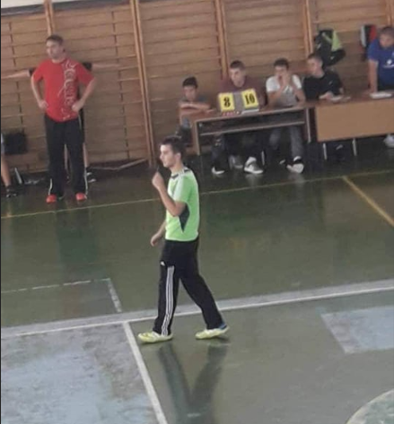

Welcome to Filip Trajkovik's personal webpage
Handball
One of my favourite things over the years was playing handball. I started playing handball at the age of 11, and stopped at
the age of 19. In the beginning I was playing just fo fill my free time, but as the time went by, I realised that I really
enjoy playing it. Besides my team, I also played for my primary and secondary school team. Another great experience besides the
handball matches, was being a referee on several occasions.
In the beginning, we weren't at any league, but at the age of 13 I entered the pioneers' team and played in State's East pioneers league. It was a whole new thing for me, as starting to play versus other teams, playing in other cities, playing in front of spectators and fans. My first position was pivot, and for start I really found my self on that position and I enjoyed playing it. As we started competing in the league, every winter we were going on 7 day's preseason trainings, mostly in Slovenia. At the age of 13 I also started playing for my primary school handball team. I stayed in the pioneer's team until the age of 16. Unfortunately we didn't get to the State's Easy Pioneers League Final 4's.
As I turned 16 I joined the cadets team and my new position was left wing, which remained until the end of my handball career. This also meant new experience for me because we started playing in front of fans in our city and in other places as well. This brought more excitement in the matches, but also more pressure when we played away. The first season didn't went well as we planned, but in the 2017/2018 season we finally reached the State's Final 4 where we ended with Bronze medal. Later on, at the age of 18 I joined the seniors team where we faced all age players and we felt what real handball means. When I started university I stopped playing handball, because I wanted to give my best and spend most of my time in the IT sector.
Besides my handball team obligations, from the age of 13 I played for my primary and secondary school handball team. In the ninth grade, we reached State's Final 4 where we ended in 4th place and in the fourth year in secondary school we ended on the fifth place on state's level.
On several occasions I got another role on the field, as a referee. It was another great experience too. I got chance to lead a match in pioneer and cadet team in my home town and in some other towns. Besides great experience it was also pleasure to feel how is it like to be a handball referee.

Free Time Sport's
Although my all time favourite sport was handball, some weekends when I didn't have any school or handball activities, spent my free time playing mostly
basketball and football outside, while volleyball in PE class. I really enjoyed playing any kind of inside door sport, because it's great way to spend your time
with your friends but also good for your health. I also tried football for 2-3 months alongside with handball, but very soon I realised that handball is the
kind of sport that I would like to play and spend some real time on it. But whenever there was a good football match on TV, I never missed a chance to watch it.
I also tried to watch some outdoor sports like skiing, golf, swimming, hiking and others too, but never found something fun in them, whether to watch them or try
them.